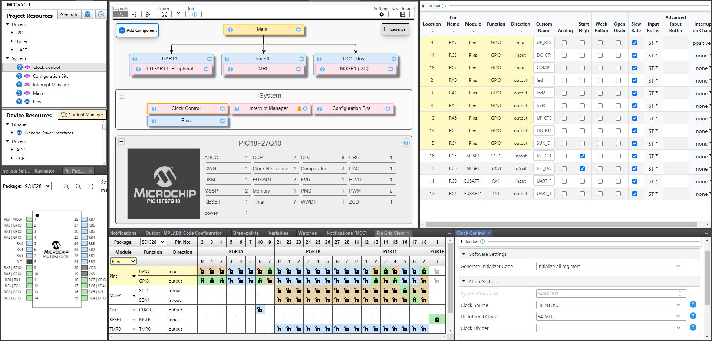
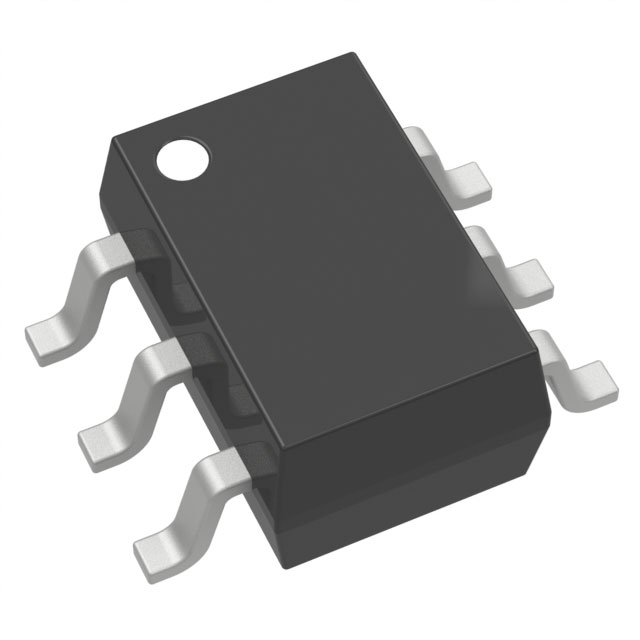
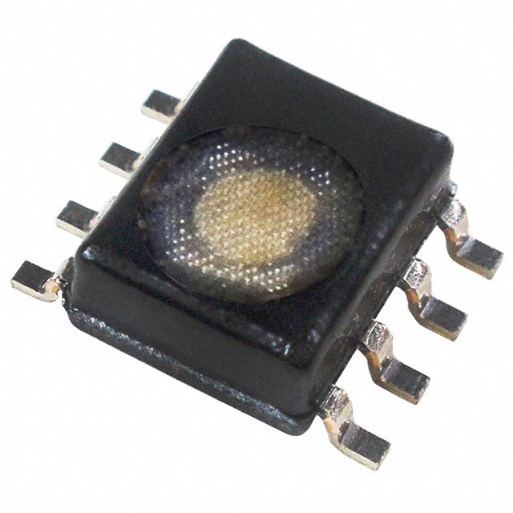
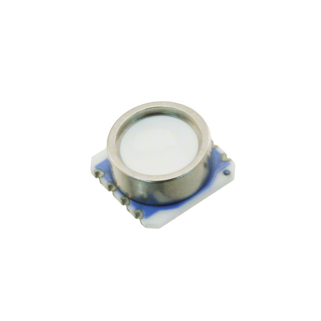

Component Selection
Overview
The sensor subsystem utilizes an 8-bit PIC18F27Q10-I/SO microcontroller to control the subsystem. I2C is used to interface with the three sensors that gather temperature, humidity level, air pressure, and wind speed. Two photoresistors are used to monitor the angle of the sun relative to the solar panel. A comparator is used to reduce the two analog signals to a digital signal that outputs the binary direction that the panel must move in.
Wind speed is gathered through a rotary hall effect sensor. The sensor records the rpm of the anemometer which is then used to calculate the wind speed. Humidity is measured with a relative humidity sensor. A barometer is used for measuring the air pressure. Surrounding temperature is measured using the humidity sensor, but can be measured through the barometer in the event of a failure.
Required & Selected Components
| Component Name | Selection |
|---|---|
| Microcontroller | PIC18F27Q10-I/SO |
| Volatage Regulator | LMR16006YQ3DDCRQ1 |
| Hall Effect Sensor | AS5600L-ASOM SOIC LF T&RDP |
| Temperature Sensor | HIH6030-021-001 |
| Humidity Sensor | HIH6030-021-001 |
| Air Pressure Sensor | MS580301BA01-00 |
| Comparator | MCP6541RT-E/OT |
Microcontroller
| PIC Information | Spec |
|---|---|
| Model | PIC18F27Q10-I/SO |
| Price | $1.45/each |
| Links | Vendor Datasheet |
| Absolute Maximum Current | 250 mA |
| Supply Voltage Range | 1.8V-5.5V |
| Maximum GPIO Current | 50 mA |
| Memory | 128 kB |
| Clock Speed | 64 MHz |
| IO Pins | 25 |
| External Interrupts | Yes |
| MPLabX Compatibility | MCC Compatible |
| Module | Available | Needed | Associated Pins |
|---|---|---|---|
| GPIO | 25 | 6 | * |
| ADC | 4 | 0 | * |
| DAC | 1 | 0 | RA2,RA3,RB7 |
| UART | 2 | 1 | RB0:RB7 RC0:RC7 |
| SPI | 1 | 0 | RB0:RB7 RC0:RC7 |
| I2C | 1 | 1 | RB0:RB7 RC0:RC7 |
| PWM | 2 | 0 | RA0:RA7 RC0:RC7 |
| ICSP | 1 | 1 | RB6,RB7,RE0 |
MPLabX Code Configurator
The configuration of the microcontroller is depicted below. 2 pins are used for UART communication to connected boards, and another 2 pins are used for I2C communication to the sensor peripherals. 4 GPIO pins are used for the UART RTS and CTS lines with an additional digital line sent downstream to the motor subsystem. The remaining GPIO pin is used for the comparator input.

{kind=link}
This microcontroller is selected primarily due to its familiarity within the class. The smaller 28-pin package, is desirable for its greater pin spacing and reduced amount of IO pins. The requirements of the microcontroller are severely reduced due to utilizing I2C communication between peripherals. Below shows a summarized comparison of all the microcontrollers considered.
| Option | Pros | Cons |
|---|---|---|
 PIC18F47Q10-I/PT $1.65/each datasheet |
- Familiar due to use in course - 128kB Memory - 36 IO pins - 64MHz processing - Inexpensive |
- Low power range - Could be limiting with amount of peripherals |
PIC18F27Q10-I/SO $1.45/each datasheet |
- Same features as microcontroller in course - 128kB Memory - 64MHz processing - Most inexpensive option |
- 25 IO pins - Less IO device system capabilities |
 PIC18F26Q43-I/SS $1.54/each datasheet |
- Far more digital IO features & devices - 64kB Memory - 64MHz processing |
- 25 IO pins - More expensive than other options |
Voltage Regulator
| Option | Pros | Cons |
|---|---|---|
 LMR16006YQ3DDCRQ1 $1.38/each datasheet |
- Large input voltage range - 2A output capacity - Simple application circuitry - Reduced electromagnetic interference |
- Smaller operational temperature range - Small package |
 TPS62132RGTR $1.71/each datasheet |
- 3A output capacity - High switching speed - Lowest minimum input voltage - Provides short circuit protection |
- Smaller input voltage range - Impossible to solder by hand - Complicated application circuitry |
 LM2675MX-3.3/NOPB $4.36/each datasheet |
- Large input voltage range - High maximum input voltage - Larger operational temperature range - Has variable output version |
- Limited 1A output capacity - Higher minimum input voltage - Lower switching frequency - Expensive |
|  LMR16006YQ3DDCRQ1 $3.49/each datasheet |
- Large input voltage range - High switching speed allows for more compact application - Reasonable footprint size |
- Smallest supply amerage capacity - More complex application circuit - Lower efficiency |
{kind=link}
Selected Component: Option 4 - LMR16006YQ3DDCRQ1
Rational: This switching power supply has the desired output of 3.3 volts. While the supply capacity is the smallest, the application subsystem does not require excessive amounts of aperage and the 600mA of capacity leaves copious head room on capacity. It is also in a package that is easily soldered by hand. The required supporting circuitry is simple and will take up less space. The higher switching frequency makes it better suited to the lower input voltages.
Hall Effect Sensor (Wind Speed)
| Option | Pros | Cons |
|---|---|---|
 HAL3726DJ-A $2.70/each datasheet |
- Provides self diagnosis - Rotary hall effect sensor - Can read 2D position |
- Requires separate voltage regulator(doesn't operate at 3.3V) - More expensive option - No serial communication |
 A1304ELHLX-T $0.96/each datasheet |
- Simple analog output - Inexpensive - Easy implementation |
- Linear hall effect sensor - No serial communication - Narrow operational voltage range - Higher current draw |
 AS5600L-ASOM SOIC LF T&RDP $4.54/each datasheet |
- I2C data communication - Rotary hall effect sensor - Operates at 3.3v |
- Most expensive option - Sensitive to moisture - Limited reprogramming |
Selected Component: Option 3 - AS5600L-ASOM SOIC LF T&RDP
Rational: This option provides an I2C compatible rotary hall effect sensor. The rotary design allows for the easiest implementation of sensor. It is the most expensive option, but comes with the most ideal features.
Temperature Sensor
| Option | Pros | Cons |
|---|---|---|
 TC74A4-3.3VCTTR $1.15/each datasheet |
- Wide operational voltage range - I2C data interface - Returns raw temperature(doesn't require further calculations) - Multiple versions with different addresses |
- Lower resolution(7b) - More expensive - Negative temperatures require further calculations - Slower I2C clock limit |
 LM75AD,118 $0.66/each datasheet |
- I2C data interface - Higher resolution(11b) - Programmable limit - Inexpensive |
- Larger component - Unnecessary extra features - Requires further data transformation - Requires more connections |
 TMP1075DGKR $0.47/each datasheet |
- I2C data interface - Higher resolution(12b) - Most inexpensive option |
-More data to be communicated - Requires further data transformation - Requires more connections |
Selected Component: Other - HIH6030-021-001
Rational: The selected component for the humidity sensor doubles as a temperature sensor. This eliminates the need for a standalone sensor.
Humidity Sensor
| Option | Pros | Cons |
|---|---|---|
 HIH6030-021-001 $2.55/each datasheet |
- I2C data interface - Has temperature output - Most inexpensive option - Highest accuracy |
- Impossible to solder by hand - Tiny chip size - Lacks standard mode I2C speed |
 HIH6030-021-001 $6.67/each datasheet |
- I2C data interface - Has temperature output - Affordable cost |
- Lowest relative humidity accuracy - Non-condensing |
|  HIH6131-000-001 $18.09/each datasheet |
- SPI data interface - Has temperature output - Protected from condensation |
- Does not support I2C - Very expensive option |
{kind=link}
Selected Component: Option 2 - HIH6030-021-001
Rational: This option has the lowest accuracy; however, its larger package is easier to solder and supports I2C communication. It also doubles as a temperature sensor which offsets the increased cost.
Air Pressure Sensor
| Option | Pros | Cons |
|---|---|---|
 DPS368XTSA1 $2.51/each datasheet |
- Supports I2C & SPI communication - Simpler footprint - Measures temperature |
- Vented guage - Smaller pressure range - Impossible to solder by hand |
ENS220S-BLGT $2.70/each datasheet |
- Adequate pressure range - Supports I2C & SPI communication - Absolute pressure guage - Measures temperature |
- Very low operational voltage range - Less suited for application - Impossible to solder by hand |
|  MS580301BA01-00 $20.09/each datasheet |
- Supports I2C communication - Has an altimeter function - Functions as temperature sensor |
- Very expensive - Larger data transmissions - Complicated interfacing |
{kind=link}
Selected Component: Option 3 - MS580301BA01-00
Rational: This sensor is an absolute pressure sensor that can operate with the 3.3V utilized in the subsystem. It also uses I2C to communicate data which is the chosen method for the subsystem. This option was one of the few that could be hand soldered. This option is very expensive, but is worth the trade for the functionality it adds.
Comparator
| Option | Pros | Cons |
|---|---|---|
 LM2903DR $0.18/each datasheet |
- Power can be supplied rail-to-rail - Very inexpensive - Extremely fast operation - Large differential voltage range |
- Open collector design(harder to implement) - Larger package - More complex circuit & connections |
 MCP6541RT-E/OT $0.39/each datasheet |
- Power can be supplied rail-to-rail - Push-pull design - Can drive larger load |
- Slower operation speed - Smallest voltage supply range |
TLV7031QDBVRQ1 $0.72/each datasheet |
- Power can be supplied rail-to-rail - Push-pull design - Decent voltage supply range |
- Limited differential voltage - Higher hysteresis - Limited load driving capability |
Selected Component: Option 2 - MCP6541RT-E/OT
Rational: The push-pull configuration of this option allows for a simpler application circuit. This option also has a lower hysteresis which gives a lower switching threshold for the application signals.